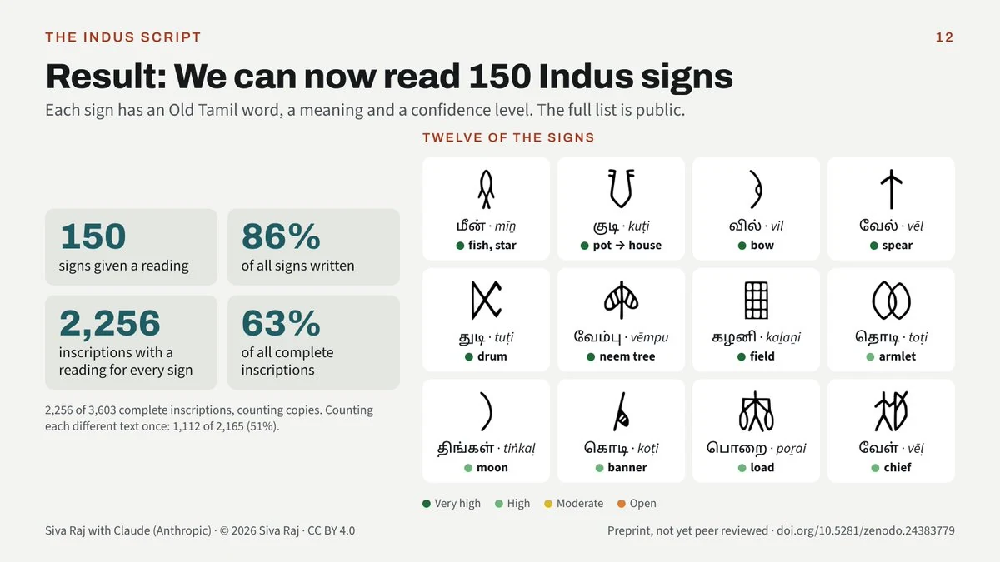

Preprint · 27 Nov 2026
“Indus script cracked” with AI: we reran the paper’s own code
Siva Raj, with Claude (Anthropic) · Zenodo 24383779 (v0.7, not peer reviewed)
A preprint going viral says AI has read the Indus script as early Tamil. We downloaded its code and data and ran them ourselves. The code works exactly as published. But when we gave it the wrong pictures, or a language with no link to the Indus, it still found a “reading”. The Indus script has not been deciphered.
What the paper claims
The preprint is by Siva Raj, working with Claude, Anthropic’s AI model (Zenodo, version 0.7, not peer reviewed). It gives an Old Tamil word to 150 Indus signs, covering 86% of all signs written, and says Tamil fits the seals far better than Sanskrit.

Credit where it is due: this is the most open decipherment claim we have seen. The author published the data, the code, plans fixed before the tests, a register of 494 tests and a frank list of limits. That is why we could check it in a day. Most claims never make that possible.
How the method reads a sign
An AI describes each sign in English (“pot”, “fish”, “bow”). An AI translator turns those words into Old Tamil. Then every Tamil name part that sounds like one of those words is added as a possible reading. A solver picks whichever readings make the seals look most like Tamil personal names, and the result is scored on seals it has not seen.
The sound-alike step does most of the work. In the paper’s own runs, most final readings are not the picture’s word at all.
Test 1: put the pictures on the wrong signs
If the signs really depict Tamil words, the score should drop when each sign gets another sign’s picture words. We shuffled the picture words onto random wrong signs, 50 times, and reran the paper’s code each time.
The score did not move: 223 with the right pictures, a median of 224 with the wrong ones (p = 0.51). A test that cannot tell right pictures from wrong ones cannot show that the pictures are right.
Test 2: fake seals
This one went the paper’s way, and we say so. On seals with their signs shuffled, or made of random signs, the score falls to zero or below. So the score does pick up the real order of signs on the seals.
Put the two tests together and the picture is clear. Tamil names are built from short, repeated two-part patterns, and the seals have repeated sign pairs. The method maps one onto the other. That can happen whatever the signs depict.
Test 3: a language with no link to the Indus
The paper beats Sanskrit and Akkadian, but their names are mostly single words, gods and verbs, with little to fit. A fair rival is a language with no proposed Indus link whose names, like Tamil’s, are built from drawable things. Japanese family names are a good one: Yamada is “mountain” + “rice field”.
We built the Japanese lists with the paper’s own AI prompts, changing only the language, and ran its code unchanged. The seal at the top of this page is one result.
| Old Tamil | Japanese | Sanskrit | |
|---|---|---|---|
| Score | +223 | +134.5 | −13 |
| Runs above chance | 10 of 10 | 7 of 10 | 4 of 10 |
| Runs ahead of Tamil | 4 of 10 | 0 of 10 |
Japanese gets 60% of Tamil’s score and beats Tamil in 4 of 10 runs. To be fair to the paper: before running it, we set the bar at 8 of 10 runs above chance, and Japanese reached 7. So by our own rule the paper passes this test, narrowly. What it shows is that the paper’s wins over Sanskrit and Akkadian are mostly about naming style, not language.
Test 4: three more languages
One language is one data point, so we ran three more, again fixing the rules before any run. Sumerian, from Mesopotamia, the Indus cities’ trading partner, was once proposed as the Indus language; its 1,600 most frequent names come from Ur III tablets. Egyptian is the other great early script of the time, and its names are built from words too. Finnish is a placebo: its surnames are built from nature words (Mäkinen, “hill”), much like Japanese ones.
This one is a point for the paper: its Tamil list comes out on top, and none of the three reaches half of its score. (Hold that thought: in Test 7, Tamil lists rebuilt from the same sources score only +4 and +49.) Sumerian comes closest. But look at the right-hand column. Every language with real names except Sanskrit beats chance most of the time, Finnish in all 10 runs. So beating chance is what real names do on these seals, whatever the language. The size of the lead tracks how many picture words each language gets per sign (Tamil 2.5, Japanese 2.4, the rest 1.6 or fewer) more than which language it is. And Test 1 already showed that Tamil’s lead does not depend on its pictures being on the right signs.
Test 5: the object “proof”
The paper’s most striking evidence is signs that name the object they are written on: a sign read “armlet” turns up on bangles, and a sign read “copper” on copper tablets. But copper tablets were made in sets that carry the same inscription, and the paper counts every copy.
“Copper” sign on copper tablets
p = 6×10⁻¹¹ → p = 0.19
“Armlet” sign on bangles
p = 1.5×10⁻⁷ → p = 0.017
Test 6: is the paper’s Tamil list special?
The charts above make Tamil look like the best candidate, so we checked what in the paper’s Tamil list gives it the lead. Two things set it apart from every other list. Its words are written with Tamil letters, and the sound matcher has cheap near-matches for them (ṉ≈n, ḷ≈l, ā≈a). And its 1,125 names are not only people: 532 are people, and the rest are places, gods, groups, lineages, hills, stars and rivers from the Sangam poems.
Spelling turned out not to matter: written in plain letters, like the other languages, Tamil still scores +206. The kind of name matters a lot. With people’s names only, Tamil scores +3, no better than chance. That is not because the list is shorter: random mixed lists of the same size (532 names) score a median of +178. Tamil’s score comes from its place, hill, river, god and group names. Its personal names alone fit the seals worse than Sumerian or Egyptian personal names. Yet the paper reads the seals as names of people with their titles and clans.
Test 7: a second Tamil list, and Tamil’s sister languages
If the test really detects Old Tamil, a second list of Old Tamil names, built independently from the same kinds of sources, should score about as well as the paper’s. So we had a fresh AI agent, which knew nothing about this project, build one from the Sangam poems and the oldest Tamil inscriptions. It used the paper’s prompt for its Sanskrit rival list, with the language and sources changed. We also added an instruction to keep honorific endings like -ār as separate parts, which the paper’s prompt does not have; an independent review caught this, and we tested it below. Another agent spot-checked the list against the Tamil Lexicon and the Dravidian Etymological Dictionary before anything was run.
The second Old Tamil list scores +4, about the same as its scrambled control on average, with large swings from run to run (4 of 10 runs above chance). The method finds just as many pictures to read with it, so that is not the reason.
We then took the two lists apart, with each check fixed in advance:
- The picture words are not the cause. The paper’s names with the new picture words score +276; the new names with the paper’s picture words score −72.
- The honorific endings are not the cause. With every -ār, -aṉ and similar ending removed, the new list still scores +7, and the paper’s list still scores +198.
- It is which names are in the list. About 430 names appear in both lists. The paper’s other names score +218 on their own; the new list’s other names score −96.
To rule out our added instruction entirely, a third fresh agent built a third Old Tamil list with the paper’s prompt unchanged except for the language, sources and examples. It scores +49 (+65 with the paper’s picture words), with 6 of 10 runs above chance: better than the second list, and still well under half the paper’s +223.
So the +223 does not survive rebuilding the list. It depends on which names went into the paper’s list, and the paper’s archive does not document how that list was compiled. This is not a verdict on Old Tamil: the scores swing by about ±175 from run to run, so two rebuilt lists cannot pin down a true score, only show that the paper’s is not typical.
The sister languages are weak tests. Old Telugu is void: our compiler took two thirds of its names from Nannaya’s Mahābhārata, which are Sanskrit, so once loans are dropped the method has almost nothing to work with and reads fewer than two signs. Old Malayalam, from texts 600 to 1,400 years later than the Sangam poems and with many Sanskrit loans dropped, does not beat its control (−92). Old Kannada is void too, for the same reason as Telugu: two thirds of its name parts are Sanskrit loans, and the method reads under three signs. Counting those loans as ordinary words gives Kannada enough to work with (nine signs read), and it still scores only +18. By the rule we fixed in advance, the test does not favour the Dravidian languages, but with two of the three runs void that verdict carries little weight.
The fair summary is that one list fits well, and the score moves a lot when the list changes. That sensitivity is a reason for caution: the result depends on choices in building the list that the paper does not fix.
Test 8: can a wrong language be built up to Tamil’s level?
If the choice of names moves the score this much, it should be possible to build a list from a language with no link to the Indus that does as well as the paper’s Tamil list. We tried, deliberately and in the open, with Japanese. As before, each check was fixed in advance. This shows how much list-building choices matter; it is not evidence for Japanese, and we do not know how the paper’s list was made.
- Built from the pictures on the signs. A fresh agent listed 1,125 real Japanese names of every kind (family names, towns, mountains, shrines, gods, islands, rivers), each containing a word for something drawn on the signs, like yama “mountain” or ya “arrow”. No scores were used to build it. It scores +186, above chance in 8 of 10 runs and ahead of Tamil in 5.
- On seals no choice had seen. We split the seals in two. A computer search picked the half of the Japanese surnames that fitted the first half of the seals best. On the second half, which the search never saw, the picked names score +135, against +104 for the paper’s Tamil list on the same seals (scores on half the seals are about half as big). The list built from the pictures also scores +105 there, level with Tamil.
- Picture words alone are not the trick. Keeping only the Japanese surnames that contain a picture word lowers the score to +52. And the paper’s Tamil list is no richer in picture words than our rebuilt ones (about a quarter of names in each). What lifts a list is the mix of kinds of names, places, mountains and shrines among them, just as for Tamil in Test 6.
So with a rule anyone can state, a language with no link to the Indus reaches the paper’s Tamil level. A score that list-building can move this far cannot tell us which language the seals write.
Every run we made, side by side
Is any of this new?
The idea is not. Reading the script as early Dravidian through picture-puns goes back to Henry Heras (1953), Yuri Knorozov’s team (1965), Asko Parpola (1969 onward) and Iravatham Mahadevan (1977 onward). The best-known readings on the slide, such as fish = mīṉ = “star”, are theirs, and the paper credits them.
What is new is the scale (one key for 150 signs), the speed of working with AI, and the openness. That openness is the best part of the paper, and it is exactly what let us show that its main test does not tell right from wrong.
It also shares a problem with the Sanskrit reading by Yajnadevam, which uses the same corpus file: a key fitted to the inscriptions is judged by how well they then read. Each method crowns its own language on the same data. That alone shows that a fluent reading does not settle the language.
What would settle it
Real decipherments are proven by a test that could have failed. Linear B was accepted when a newly dug-up tablet read correctly with sign values fixed in advance. For the Indus script that could be:
- reading new or unpublished inscriptions blind, with the values fixed first;
- specialists in Dravidian languages rating, blind, readings of real inscriptions mixed with readings of fake ones;
- running the whole method on a script we can already read, and on a planted wrong language.
Until a reading passes a test like that, the Indus script remains undeciphered.
Read the full analysis. Our preprint: doi:10.5281/zenodo.24579269. Plans fixed before the tests, code and every number: the results in our repository.
Want to do research like this? Every test we run is open, and anyone can help, with or without an AI agent. Contribute to Open Indus.
Our full reading notes on the paper
How we read it
Read: full (Methodology v0.7, 75 pages; Reading Rules v0.7; README; test-archive README, MISSING and AUDIT; the REP-1, REP-3 and REP-7 test folders with code and outputs). All files downloaded from the Zenodo record, checksums equal to Zenodo’s. Sources opened: zenodo.org/records/24383779, x.com/jaravis/status/2125302028062822491, github.com/yajnadevam/lipi.
What they did
- Characterised the script from its own patterns: a logographic script with one fixed frame (opener, middle, count, closer).
- Ran a language contest: blind AI judges described 69 signs in English; AI translators gave Old Tamil and Vedic Sanskrit words; a solver chose a word per sign on half the seals to fit real names (1,125 Tamil, 1,367 Sanskrit), scored on the other half against the same names scrambled.
- Graded 150 sign readings by structural fit, a blind AI picture test and a blind AI meaning test; all judges were Claude models.
- Looked for ‘object marks’: signs whose reading names the object they are written on.
What they found
- Tamil +223 ± 103 against scrambled names (10 of 10 splits); Sanskrit −13; Akkadian −2; Munda village names +7 against Tamil +89.
- 150 signs read, 86% of sign uses; 51% of distinct complete texts read in full (63% counting duplicate copies).
- Three object marks: ‘armlet’ on bangles, ‘copper’ and ‘smith’ on copper tablets.
- The paper itself states there is no outside confirmation of the kind a new Pylos tablet gave Linear B.
Strengths and limits
- Strength: unusually open. Data, code, preregistered plans with hashes, a register of 494 tests, wrong-word rates per confidence group and a frank limitations section. Their code reproduces exactly.
- Our check: with the picture words moved onto the wrong signs at random, Tamil scores the same (median +224 over 50 permutations, p = 0.51). The language result does not depend on what the signs depict.
- Our check: Japanese family names, which like Tamil names are built from drawable things, score +134.5 (60% of Tamil) and beat Tamil in 4 of 10 splits. By our preregistered bar (8 of 10 seeds above control) Japanese narrowly fails at 7 of 10, so the contest passes this control; the paper’s wins over Sanskrit and Akkadian are mainly about naming style.
- Our check: 59% of Tamil readings in their own runs are sound-alike name parts rather than picture words.
- Our check: the copper-tablet result counts copies. The 21 tablet faces with the ‘copper’ sign carry 3 distinct texts (p = 0.19 counted once each); the armlet sign is on 4 distinct bangle texts (p = 0.017, short of their own multiple-test line). Reassigning their readings at random matches objects as often (p = 0.10).
- Our check: on fake seals the score falls to zero, so it does reflect real order in the inscriptions; that order is long known and fits many readings.
- From the paper: no reading was fixed before the data used to test it; structural fit was scored on the texts that chose the readings; the AI judges could see notes that the project holder knows Tamil.
- Like Yajnadevam’s Sanskrit reading, it uses the same corpus file and the same kind of evidence: a key fitted to the corpus, judged by how well it reads. The two crown different languages on the same data.
What the authors say comes next
- Outside review by Tamil and Dravidian specialists, and checking the corpus copy against the ICIT (§15–16)
Ideas it gives us
- A blind reading test Real inscriptions mixed with sign strings that look like Indus texts, read by the method, rated blind by Dravidianists; values fixed in advance. Open data enough: yes. Needs: Specialist raters
What we take from it
TestedCredit where due: open code, data, preregistered plans and frank limits made this check possible in a day. What their tests show is that Tamil name structure fits the repeated sign pairs of the seals; a language with a similar naming style fits too, and the pictures do not matter. A real test needs values fixed in advance and read blind on new inscriptions.
The idea we are borrowing
Check the claimed Tamil decipherment with its own code, plus the controls it did not run
Where it stands: Tested.